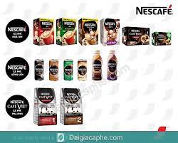
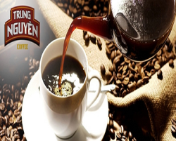
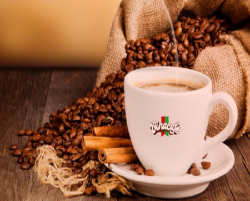

Trung Nguyen coffee is most famous for its strong taste and aroma.It is the leading local brand in Vietnam and a big exporter-you can find Trung Nguyen coffee in over 70 countries in the world.There is a wide range of product diverse in the mix of coffee beans and processing mrthods. Trung Nguyen coffee has 3 main types, instant coffee, roasted coffee and distrintivw(weasel) one.
  Forcusing more on the mild side.Vina Cafe is among the best choices for instant blended coffee.This brand is most famous for its creamy,hazelnurry flavor for those with a sweet tooth.Vina Cafe has been the coffee of our chilhood and still most common among Vietnamese household.The most popular ones are VinaCafe 3-in-1 Wake-up Cafe with Weasel Flavor
NESCAFE-the famous worldwide brand, comes with a lot of choices for the discering market of VN coffee connoisseurs.Among their products,instants ones are top of mond.Their blended coffee comes in different levels of strong tasts that can be no less delicious tha their ground coffee counterparts.Their Nescafe cans Mocha/Latte are a good chocie when you want just a pack of ready-made goodness